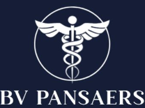
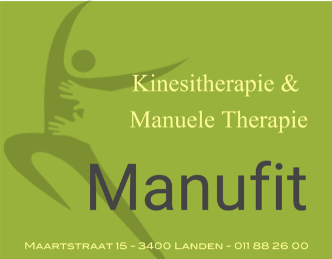
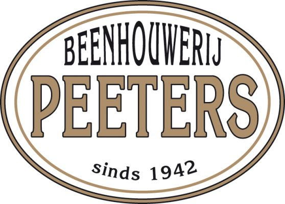
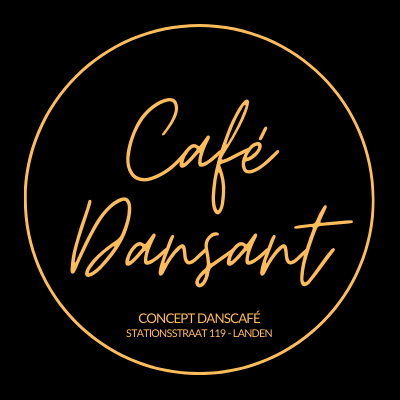
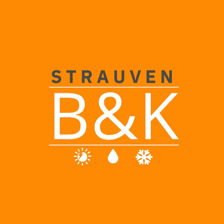
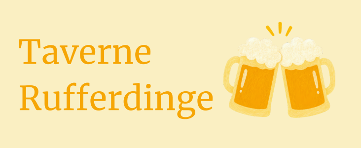
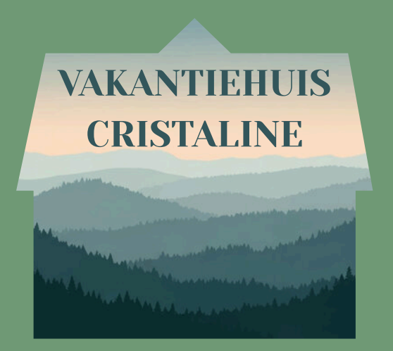
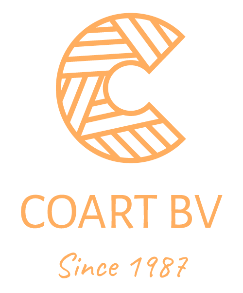

Onze sponsors
Achter elke succesvolle club staan sterke partners. Daarom willen we al onze trouwe sponsors oprecht bedanken voor hun steun aan Landen City FC. Dankzij hun engagement kunnen wij onze ambities waarmaken en investeren in de toekomst van onze club.
Hoofdsponsors

Sportgeneeskunde, medische begeleiding en advies voor actieve sporters.
Officiële partners

Team van kinesitherapeuten met verschillende specialisaties, voor optimale ondersteuning.

Lekker verse fruitproducten afkomstig uit de rijke leemgronden van Velm.

Ambachtelijke slagerij, met de vertrouwde kwaliteit van toen en met het veelzijdige aanbod van nu.

Bruisend danscafé voor alle leeftijden, met kwaliteitsvolle muziek en ruimte voor eventen.

Jouw one-stop-shop voor elektriciteit, sanitair, airco & verwarming, zonnepanelen, batterijen, laadpalen en warmtepompen.
Clubpartners

Gastvrije taverne voor een hapje, drankje en vooral een gezellig samenzijn.

Luxueus vakantieverblijf voor ontspanning en rust in de prachtige Ardennen.

Familiebedrijf uit Sint Truiden met een passie voor hout en vakmanschap, van ramen en deuren tot totaalprojecten.